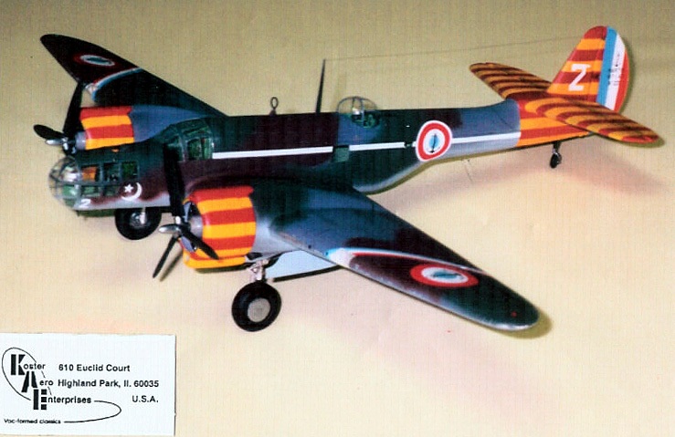
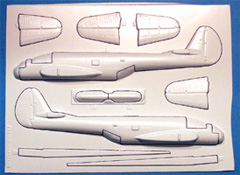
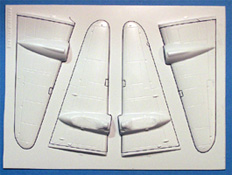
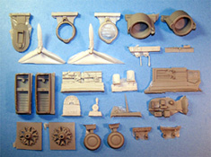
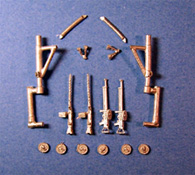
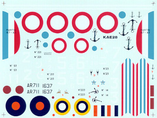

{kind=link}
{kind=link}
{kind=link}
{kind=link}
{kind=link}
{kind=link}


Koster 1/48 Martin Maryland

Kit #28
MSRP $44.95
Images and text Copyright � 2006 by Matt Swan
Developmental Background
The Martin Company designed the model 167 Maryland in response to an Army Air Force requirement for a three place reconnaissance bomber in the late 1930�s. While the competition was won by Douglas and the A-20 Havoc the Maryland went into production for sale to foreign air forces. Powered by two Pratt & Whitney R-1830-S3C4-G engines the Maryland was a sleek bomber with a good performance, but a very cramped fuselage. She had a top speed of 304 mph at 13,000 feet, and cruise at 248 mph and long legs with a range of nearly 1300 miles. Armed with four 30 caliber machine guns in the wings and two .303 guns in dorsal and ventral positions she had a reasonable chance of delivering the 2000 pound bomb load carried in an internal bomb bay.
Martin won two export orders right away from France for 215 aircraft. The first shipment of 93 aircraft were shipped the day before England and France declared war on Germany and ended up spending a month in impound in Canada. By April of 1940 all 215 aircraft had been delivered to France where they were quickly assembled and distributed to four squadrons under the French moniker of �Glenn�. At the time of the Franco-German armistice many French 167s were diverted to England followed by several more with fleeing French crews.
Maryland�s were employed as reconnaissance bomber and for anti-shipping searches by the British. Later deliveries of Martin Maryland�s had upgraded engines and were referred to as Maryland II�s. All 150 of these aircraft were shipped to Africa with the Western Desert Air Forces to support the invasion forces there. Four of these aircraft took part in the "Crusader" offensive launched in November 1941. The Maryland was a useful aircraft to the Allies and performed well as a high altitude spy plane. It earned an important footnote in history when a Maryland flown by Lt NE Goddard, with Cdr GA Rotherham, LA JD Milne and LA JW Armstrong, spotted the German Battleship Bismarck in its break-out from its moorings in Norway which launched the historic hunt for the Bismarck. There are no surviving Martin Maryland�s today � the type is considered to be extinct.
The Kit
This is probably going to be the last new kit we see from Koster Aero Enterprises since it is really a one man operation and the years are beginning to catch up to that man. As with most Koster kits this one arrives in a sturdy nondescript white cardboard box with no exterior artwork, simple kit name and number written on the box end in black marker. This is just fine with me as I am not in the practice of buying boxes, what I�m looking for are all the goodies inside. Upon opening the box I am greeted with a full page color print of the completed model, a large sheet of decals, lots of instruction material, a large bag of resin parts, a small bag of white metal pieces and two large sheets of white vacuformed plastic pieces.
Starting with the vacuformed pieces these are done in a heavy .04 white plastic sheet run through a cavity mold system which gives us nice surface detail and consistent engraved panel lines. Fabric texture on all flight control surfaces looks good and two large wing spars are included in the sheets. While inspecting the vac parts I find very little evidence of casting boogers or miscast parts � everything looks very good. These two sheets cover all the exterior body parts and wing spars and consist of fourteen pieces. Also in the vacuform department is a small sheet of clear parts. This is the one aspect of Koster kits that I don�t like � he only gives us one set of clear parts so there is no room for error when cutting these out. The parts themselves are very nice with good clarity and well defined frame lines. There are eleven clear parts in this sheet.
While the vac parts are all very nice the really good stuff sets in the bag full of resin goodies. Almost all of the interior details are included here in thirty one resin pieces cast in gray and tan resin. The resin is all of good quality with no evident air bubbles or warpage and a slightly soft texture. There is a lot of flash on these parts and some serious clean-up time will be required. Engines are provided as faces only, wheel wells show good detail and the sidewall detail for the cockpit and bombardiers station rival the best aftermarket resin details. The dash has recessed instrument faces but no detail within the faces. Seats are well cast but have no seatbelt detail.
Lastly we have a small bag of sixteen white metal pieces. Landing gear struts, oleo arms and retraction arms are all white metal so there can be no concerns of sagging landing gear down the road. Also we have two gun options here for French or British machine guns. Overall we have seventy two pieces in the box of various media.




You may click on the small images above to view larger pictures
Instructions and Decals
Instructions for this kit consist of two A-4 size pages stapled together and printed front and back. They begin with a short set of tips for working with vacuformed pieces followed by eleven exploded view construction steps. Scattered throughout the instructions are several assembly tips. One thing that is lacking is an interior painting chart or any interior color recommendations at all. The last page is printed in color and shows nine different aircraft exterior color schemes with decal placement suggestions.

After looking at the instructions and seeing nine different aircraft featured you might expect to find a huge sheet of decals in the bottom of the box. Not so, we get only a medium sized sheet but the design of the sheet is such that decals can be overlaid to create many combinations. You can click on the image at the right to view a larger picture of the decals. Basically we have components to make national markings for French, RAF and SAAF aircraft along with various numerals and nose art to be able to complete any one of the featured aircraft. The decals are of excellent quality with great color density, good print registry and are nicely thin. I�ve used decals from Koster kits before with excellent results � they react well to common setting solutions, snuggle down well and are not prone to silvering.
Conclusions
As with all the previous Koster kits I have looked at this one is very well engineered, the parts are all of the best quality and construction is very straightforward. In addition to all this we also have the wide selection of possible markings. Fonderie Miniatures came out with their own injection molded version of the Maryland right after the Koster kit made its debut and is more expensive and less well detailed. This is an exceptional kit of an unusual subject that is well worth having in your collection but time waits for no man. The years are adding up on Bill and these kits may not be available much longer so as they say, �if you snooze, you lose�, get yours today.